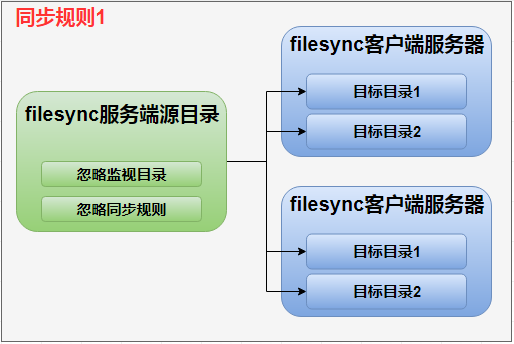

2.3 filesync服务端同步规则介绍
2.3.1 同步方式
服务端服务器的源目录下的文件变化反映在客户端服务器的相应目标目录下,称为同步。
在同步规则中,可以设置过滤选项对一些特定类型或目录下的文件进行忽略监控或者同步,例如数据库文件、计数器文件、临时文件可以根据需要设置为忽略同步。
2.3.2 同步规则
- 目录路径不要以"/"符号结尾,不同的规则使用不同的同步名称。
- 每一个同步规则下只能有一个源目录,允许有多个目标目录,不同的同步规则下源目录可以重复。
- 允许每一个同步规则下可以有多个目标服务器,并且不同的同步规则下目标服务器可以重复。
- 每一个同步规则下可以有多个忽略同步目录以及忽略同步规则,并且不同的同步规则下忽略同步目录以及忽略同步规则可以重复。

图示 2-1 同步规则
Copyright © 2018-2019 WuNanhui. All rights reserved.